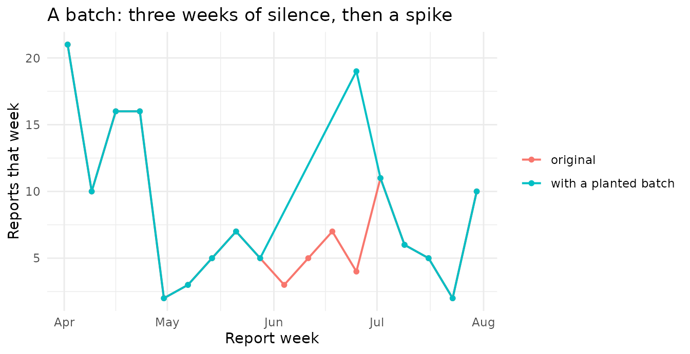

Batch detection
tbl.now team
Batch_detection.RmdWhat this vignette is about
Surveillance systems stall. A laboratory closes over a holiday, a data pipeline breaks for a week, a reporting office falls behind and then catches up. When the system restarts, a backlog of reports arrives all at once. We call that report date a batch.
Batches matter because they look exactly like an epidemic taking off — a sudden jump in reported cases — while being nothing of the sort. A nowcasting model that assumes a stable reporting process will happily interpret a batch as a surge in incidence.
This vignette shows how to find them. Everything here is
model-free: no model is fitted and nothing is estimated
by a downstream nowcaster. You need only a tbl_now,
which makes these tools appropriate for exploratory data analysis
before you commit to a model.
The batch-detection functions are experimental: the statistical behaviour and the interface may still change, and each warns you when called. Treat a flagged report date as a potential batch, not a confirmed one.
The theory and its proofs live in the help pages — every function has
a “The mathematics” section (see
?batch_screen, ?batch_shape_test,
?simulate_batch). This article is about using
them.
The one idea you need
A batch moves reports. It does not create them.
Suppose the desk was shut on Monday, Tuesday and Wednesday and reopened on Thursday. Then Thursday reports its own cases plus three days of backlog. But if you draw a box around Monday–Thursday and count everything inside, you get exactly what you would have got with no closure at all. Nothing was invented; things merely arrived on a different day.
A genuine epidemic surge is different: it creates cases, and the box count goes up.
batch_screen() computes exactly these two quantities for
every report date:
| quantity | meaning | what it detects |
|---|---|---|
deficit |
reports that went missing in the days before | transport (a batch) |
delta |
the box total minus what we expected | creation (a real surge) |
and reads the diagnosis off a 2×2 table:
deficit ≈ 0 |
deficit ≫ 0 |
|
|---|---|---|
delta ≈ 0 |
nothing happened | "batch" |
delta ≫ 0 |
"surge" |
"batch_and_surge" |
delta < 0 |
— |
"hold_or_deletion" (the stall has not
cleared) |
Example 1 — Dengue with a planted batch
We start with real dengue data and plant a batch ourselves, so that we know the right answer.
data(denguedat, package = "tbl.now")
dengue_tbl <- denguedat |>
filter(report_week <= as.Date("1991-06-01")) |>
tbl_now(
event_date = onset_week,
report_date = report_week,
data_type = "linelist",
verbose = FALSE
)Planting a batch
simulate_batch() closes the reporting desk on the dates
you name and releases everything on the next open date. It never changes
an event date and never moves a report earlier — it is a
transport, exactly as the theory defines one.
closed_weeks <- as.Date(c("1990-06-04", "1990-06-11", "1990-06-18"))
release_week <- as.Date("1990-06-25")
dengue_batched <- simulate_batch(dengue_tbl, closed_dates = closed_weeks)Here is what that did to the report axis. Note the three empty weeks and the spike that pays for them.

Screening for it
screened <- batch_screen(dengue_batched, lookback = 3)
screened
#> # A tibble: 74 × 16
#> report_date stratum reported baseline window_total window_mean deficit delta
#> * <date> <chr> <dbl> <dbl> <dbl> <dbl> <dbl> <dbl>
#> 1 1990-01-01 all 3 NA NA NA NA NA
#> 2 1990-01-08 all 26 NA NA NA NA NA
#> 3 1990-01-15 all 62 NA NA NA NA NA
#> 4 1990-01-22 all 41 43.7 132 196. 61.4 -64.1
#> 5 1990-01-29 all 40 31 169 136 -24 33
#> 6 1990-02-05 all 36 23.2 179 97.8 -68.4 81.2
#> 7 1990-02-12 all 35 24.8 152 108. -33.9 44.1
#> 8 1990-02-19 all 33 21.4 144 90.9 -41.5 53.1
#> 9 1990-02-26 all 15 22.8 119 99.9 -26.9 19.1
#> 10 1990-03-05 all 21 25.5 104 114 5.5 -10
#> # ℹ 64 more rows
#> # ℹ 8 more variables: window_scale <dbl>, deficit_scale <dbl>,
#> # p_creation <dbl>, p_deletion <dbl>, p_transport <dbl>,
#> # p_transport_bh <dbl>, classification <chr>, batch <lgl>batch_screen() found the release week and nothing else.
Look at what happened around the closure:
screened |>
filter(report_date >= as.Date("1990-06-04"), report_date <= as.Date("1990-07-02")) |>
select(report_date, reported, baseline, deficit, delta, classification)
#> # A tibble: 5 × 6
#> report_date reported baseline deficit delta classification
#> <date> <dbl> <dbl> <dbl> <dbl> <chr>
#> 1 1990-06-04 0 9.67 15.7 -25.3 hold_or_deletion
#> 2 1990-06-11 0 9.88 20.0 -29.9 hold_or_deletion
#> 3 1990-06-18 0 10.0 25 -35.1 hold_or_deletion
#> 4 1990-06-25 19 8.5 24 -13.5 batch
#> 5 1990-07-02 11 8.09 2.91 0 noneThree things to notice, and they are the whole method:
-
During the closure the verdict is
"hold_or_deletion".deltais strongly negative: reports have gone missing and no spike has yet arrived to pay for them. That is the correct read of a stall in progress. -
At the release week,
reportedis far abovebaselineanddeficitis large — butdeltais small. The window total is essentially unchanged. Mass moved; it was not created. Verdict:"batch". -
deficitis roughly the number of reports actually withheld. It is not a p-value; it is an estimate of the size of the backlog.
delta really is blind to the batch
The central claim of the theory is that delta cannot see
a transport confined to its window. This is not an approximation — it is
a pathwise identity, and we can check it exactly:
screened_clean <- batch_screen(dengue_tbl, lookback = 3)
delta_clean <- screened_clean$delta[screened_clean$report_date == release_week]
delta_batched <- screened$delta[screened$report_date == release_week]
c(clean = delta_clean, batched = delta_batched, identical = delta_clean == delta_batched)
#> clean batched identical
#> -13.5 -13.5 1.0Identical, to the last digit. Planting a batch changed the reported
counts, the baseline, and the deficit — and left delta
exactly where it was. That is why delta can be trusted to
answer “was anything created here?” even in the presence of a
batch.
Looking at who was reported, not just how many
batch_screen() counts reports.
batch_shape_test() asks a complementary question: did the
reports arriving on this date come from unusually old
event dates? A released backlog is old, so its delays should be
inflated.
It compares the delays on the candidate date against those of nearby
report dates, using a permutation test. Set guard to skip
the dates immediately around the candidate — those are the deficit
weeks, and including them would contaminate the comparison.
batch_shape_test(dengue_batched, at = release_week, guard = 3, seed = 1)
#> # A tibble: 1 × 7
#> stratum n_at n_reference mean_delay_at mean_delay_reference statistic p_value
#> <chr> <int> <int> <dbl> <dbl> <dbl> <dbl>
#> 1 all 19 45 3.58 2.33 1.68 0.041The mean delay at the release week is substantially longer than at its neighbours, and the permutation test rejects. On the original data, the same date is unremarkable:
batch_shape_test(dengue_tbl, at = release_week, guard = 3, seed = 1)
#> # A tibble: 1 × 7
#> stratum n_at n_reference mean_delay_at mean_delay_reference statistic p_value
#> <chr> <int> <int> <dbl> <dbl> <dbl> <dbl>
#> 1 all 4 41 1 2.02 -1.06 0.879This test is remarkable for how little it assumes: it needs neither
the reporting delay distribution nor the epidemic curve. It only needs
the epidemic to be locally log-linear, which any smooth curve
is. See the “The mathematics” section of
?batch_shape_test for why.
Example 2 — Count-cumulative data (FluSight)
Some surveillance streams publish a running cumulative total for each week, re-reported over time, which can be revised down as well as up. FluSight hospitalisations are one such stream. Batch detection works there too — the theory is about transport, and transport does not care whether the increments are signed.
data(flusight, package = "tbl.now")
flusight_tbl <- flusight |>
filter(location_name == "California",
as_of >= as.Date("2023-10-01"), as_of <= as.Date("2024-06-01"),
observation >= 0) |>
tbl_now(
event_date = target_end_date,
report_date = as_of,
case_count = observation,
data_type = "count-cumulative",
verbose = FALSE
)
get_data_type(flusight_tbl)
#> [1] "count-cumulative"batch_screen() de-accumulates the cumulative curve into
the signed increment each report announced, then proceeds exactly as
before. Because the increments are signed, the window total is a
difference of counting processes rather than a count, so the exact
Poisson reference is replaced by a robust normal approximation. You do
not have to ask for this; it is chosen from the data type.
flusight_batched <- simulate_batch(
flusight_tbl,
closed_dates = as.Date(c("2024-01-13", "2024-01-20"))
)
flusight_screened <- batch_screen(flusight_batched, lookback = 2)
attr(flusight_screened, "null_model")
#> [1] "robust"
flusight_screened |>
filter(report_date >= as.Date("2023-12-30"), report_date <= as.Date("2024-02-10")) |>
select(report_date, reported, baseline, deficit, delta, classification)
#> # A tibble: 7 × 6
#> report_date reported baseline deficit delta classification
#> <date> <dbl> <dbl> <dbl> <dbl> <chr>
#> 1 2023-12-30 1720 1096. -698 1322. surge
#> 2 2024-01-06 1424 439. -2505. 3490. surge
#> 3 2024-01-13 0 542. -1942. 1399. surge
#> 4 2024-01-20 0 577. -140. -437. hold_or_deletion
#> 5 2024-01-27 2795 551. 1287 957. batch_and_surge
#> 6 2024-02-03 542 494. -1643. 1690. surge
#> 7 2024-02-10 405 409. -2395. 2391 surgeThe release date is flagged. But notice it is called
"batch_and_surge", and the weeks around it are called
"surge". That is correct, and worth
understanding.
Late January 2024 is the peak of the influenza season: cases really
were being created, fast. delta measures creation relative
to a line extrapolated from outside the window, and an exponential
epidemic rise is not a straight line. So "surge" fires — on
the original data too:
flusight_clean <- batch_screen(flusight_tbl, lookback = 2)
peak_week <- as.Date("2024-01-27")
tibble(
quantity = c("delta", "deficit"),
clean = c(flusight_clean$delta[flusight_clean$report_date == peak_week],
flusight_clean$deficit[flusight_clean$report_date == peak_week]),
batched = c(flusight_screened$delta[flusight_screened$report_date == peak_week],
flusight_screened$deficit[flusight_screened$report_date == peak_week])
)
#> # A tibble: 2 × 3
#> quantity clean batched
#> <chr> <dbl> <dbl>
#> 1 delta 957. 957.
#> 2 deficit -802 1287Read that table carefully, because it is the method in miniature:
-
deltais identical in the clean and batched data. The epidemic peak is real anddeltasees it; the batch is invisible todelta. -
deficitswings from negative to strongly positive. The batch is entirely visible todeficit.
So "surge" came from the flu peak and
"batch" came from our planted stall. The classifier is
telling the truth about both.
The surge verdict is the weaker one. The transport
test conditions on the window total, so it does not care what the
underlying intensity is or how good the baseline is. The creation test
compares against the baseline directly, and is therefore only as good as
it. On a steeply curving epidemic curve, "surge" will fire
on ordinary growth. If you want to detect genuine surges, fit a model.
If you want to detect batches, this screen is the right tool.
Example 3 — Weekends, holidays and other schedules
A reporting system that is always closed at weekends produces every batch symptom, every single week. This is a scheduled transport, and it is not what we are hunting. Left unmodelled it will flood the screen with false positives.
Here is daily data whose weekend reports are pushed to Monday.
set.seed(42)
origin_dates <- seq(as.Date("2021-01-04"), by = "day", length.out = 120)
report_rows <- vector("list", length(origin_dates))
for (origin_index in seq_along(origin_dates)) {
origin_date <- origin_dates[origin_index]
n_cases <- rpois(1, 30)
if (n_cases == 0) next
report_date <- origin_date + rgeom(n_cases, prob = 0.5)
# The desk is shut at weekends: those reports slide to the following Monday.
weekday <- as.POSIXlt(report_date)$wday
report_date <- report_date + ifelse(weekday == 6, 2, ifelse(weekday == 0, 1, 0))
report_rows[[origin_index]] <- data.frame(onset = origin_date, report = report_date)
}
scheduled_tbl <- bind_rows(report_rows) |>
filter(report <= as.Date("2021-05-01")) |>
tbl_now(event_date = onset, report_date = report,
data_type = "linelist", verbose = FALSE)Screen it twice — once naively, once telling
batch_screen() that the cycle is seven days long:
naive <- batch_screen(scheduled_tbl, lookback = 3)
adjusted <- batch_screen(scheduled_tbl, lookback = 3, period = 7)
c(
"flagged without `period`" = sum(naive$batch, na.rm = TRUE),
"flagged with `period = 7`" = sum(adjusted$batch, na.rm = TRUE)
)
#> flagged without `period` flagged with `period = 7`
#> 17 0Every Monday is a phantom batch until the schedule is modelled;
afterwards, none of them are. batch_screen() estimates the
effect of each phase of the cycle by taking medians across
cycles, which recovers the schedule as long as irregular
batches hit any given phase in fewer than half of its cycles.
Now plant a real, irregular four-day stall on top of the weekly schedule and see whether it can still be found:
irregular_closure <- as.Date(c("2021-03-08", "2021-03-09", "2021-03-10", "2021-03-11"))
scheduled_batched <- simulate_batch(scheduled_tbl, closed_dates = irregular_closure,
verbose = FALSE)
batch_screen(scheduled_batched, lookback = 4, period = 7) |>
filter(batch) |>
select(report_date, reported, baseline, deficit, delta, classification)
#> # A tibble: 1 × 6
#> report_date reported baseline deficit delta classification
#> <date> <dbl> <dbl> <dbl> <dbl> <chr>
#> 1 2021-03-12 208 28.0 160. 19.7 batchThe release date (12 March) is recovered. Always pass
period when your reporting system has a fixed
cycle.
Practical guidance
Choosing lookback. This is the width of
the box. It must comfortably cover the longest stall you think
plausible: a three-day closure needs lookback >= 3. Too
small and the deficit falls outside the window; too large and you lose
power, because the box total gets noisier. When in doubt, try a few
values — a real batch survives.
Choosing baseline_window. It must
satisfy baseline_window >= 2 * lookback + 3, which
batch_screen() enforces, so that a batch episode can never
outvote the robust baseline it is being measured against. The default is
the smallest admissible value.
Reading the output.
-
batchis the flag you should act on: it applies a Benjamini–Hochberg correction across every (report date, stratum) pair. -
classificationuses raw p-values, so it is more liberal. It is there to tell you which kind of anomaly, not whether. - Flags often cluster around an episode. One stall may light up its release date and a neighbour; that is expected, not a second batch.
Strata. A batch is a report date that is anomalous
for at least one stratum — one laboratory can stall while
others do not. batch_screen() returns one row per (report
date, stratum) and corrects across all of them.
What this will not do. If a stall has not cleared by
the end of your data, you see the lull and never the spike. Within the
data you have, that is indistinguishable from cases being
deleted — an honest impossibility, not a failure of the method.
batch_screen() labels it "hold_or_deletion"
rather than guessing.
A batch is not a single strange report. It is tempting to look for one case with a shockingly long delay. But a batch produces many cases with mildly inflated delays — a whole backlog, each a few days late. Finding one huge departure and finding many small ones are different statistical problems: the former wants a maximum, the latter wants to accumulate the small pieces of evidence, which is exactly what the volume/deficit contrast and the rank-sum shape test do. A per-report outlier rule (useful in its own right for spotting a single mis-recorded delay) is the wrong instrument here.
Use each tool for its question:
| question | tool |
|---|---|
| Did this report date release a backlog? | batch_screen() |
| Did this report date draw on unusually old cases? | batch_shape_test() |
| Is this individual report implausibly delayed? | see test_delay_drift() and downstream model-based
checks |
See also
-
?batch_screen,?batch_shape_test,?simulate_batch— each help page has a “The mathematics” section deriving the method. -
test_delay_drift()andtest_delay_changepoint()— the complementary question of whether the reporting delay is drifting or has a change point. - The Get started article — building and
manipulating a
tbl_now.